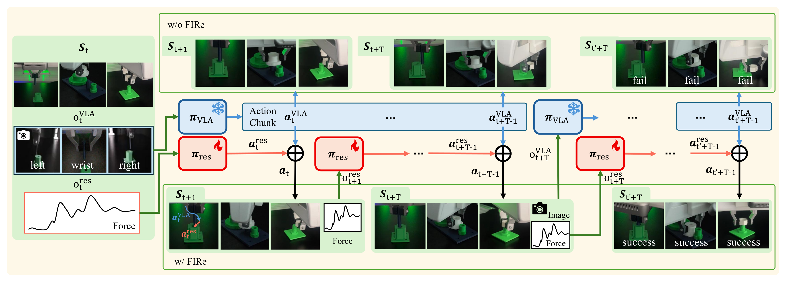

Abstract
Vision-Language-Action (VLA) models plan robotic manipulation from vision and language, but struggle at contact-rich tasks such as peg insertion, gear meshing, and nut threading, where success depends on regulating contact force rather than following a visual plan. FIRe (Force-Informed Residual Policy) augments a frozen VLA with a force-aware residual reinforcement-learning policy: the VLA provides the base action at every control step, and the residual policy observes contact force and adds fine corrections on top of it. The residual policy is trained entirely in simulation and transfers zero-shot to a real Franka FR3, enabling contact-rich assembly tasks that the VLA-only policy fails to complete.
Method Overview
The VLA plans from vision and language; the force-aware residual policy watches contact force and adds fine corrections at every control step. The residual policy is trained in simulation on top of the frozen VLA and runs zero-shot on a real Franka FR3.

Without the residual (top) the VLA-only policy fails; with FIRe's force-aware residual (bottom) the contact-rich assembly succeeds.